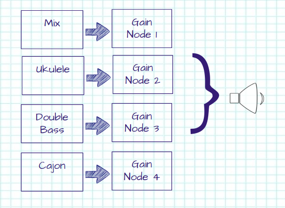
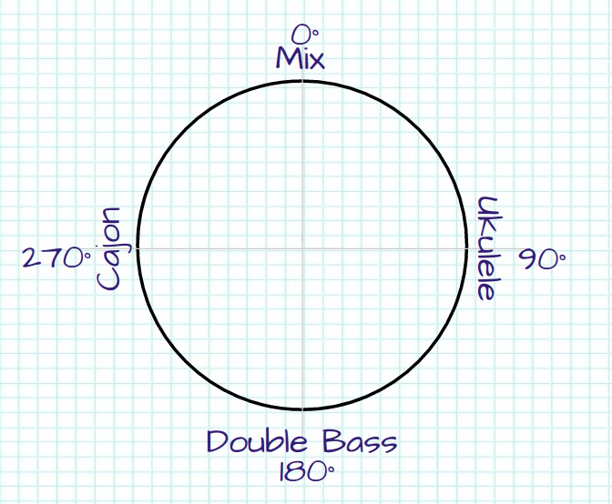

Using the HTML5 Device Orientation API to Mix Audio Sources.
Recently I’ve been doing a lot of work with 360 video. One of the things that really makes 360 work well on mobiles is the ability to use the device’s gyroscopes to automatically adjust the orientation of the video. This got me thinking of other applications for this technology.
Given that I’m more from a sound background than video, I decided to investigate how the orientation of the device could be used to mix different audio sources. Using my old ukulele, double-bass and cajon cover of Get Lucky as a source, I’m going to allow the user to hear each instrument in turn or the whole mix depending on which direction the device is facing.
For those of you who just want to see the finished result, it's here.
Determining which direction a phone or tablet is facing is ridiculously easy in HTML5. The Device Orientation event is triggered whenever the accelerometer detects movement. By registering a function as a listener to this event, we can get updated every time the device orientation changes.
There are four values obtained from the event:
For the scenario I have in mind, alpha is the property that is of interest here. If the user holds the device up and turns around to face different directions, this is the value that needs to be captured.
As a proof of concept, I’ve put together a quick test function which changes the positioning of an element depending on the alpha value returned from the device orientation event. The value of the angle is used to horizontally shift a DIV of five squares, representing the three instruments and the complete mix (with the latter repeated so that the div scrolls around seamlessly).
This results in the output below. I’ve added a slider to represent the alpha angle, for those on desktops or laptops.
Now that the orientation of the device can be captured and put to use, it’s time to look at the audio side of things. For this we’ll use the AudioContext interface.
Why not just use the HTML audio element? Well, in theory it does everything required. It plays audio, it loops and the volume can be controlled via script. However, it sucks. The looping inserts a gap between each iteration and multiple instances drift over time (unless you do some fudging by periodically resetting the play positions). Plus it’s possible to do way more using AudioContext, which makes it easier to extend beyond a simple example.
The way AudioContext works is via an audio-processing graph. (Anyone who has used GNURadio will be familiar with this concept). There are audio sources (microphones, input files), audio sinks (speakers, output files) and a bunch of processing nodes in between (gains, filters, compressors, etc).
Here’s the setup that will be used for this demonstration:
There are four audio sources: the ukulele track, the double bass track, the cajon track and the mixed audio. Each one of these will be loaded asynchronously via XMLHTTPRequest into an audio buffer node.
Each audio source is connected to its own gain node. The gain nodes will be used to independently vary the volume of each track (depending on which way the device is facing).
Finally all four gain nodes are connected to the audio destination. In this case it will be the device’s speakers (or headphones if connected).
Here’s a quick example with all four tracks being loaded and played together. - [source]
The final step is to use the device orientation data to control the gains of the four audio tracks.
Each audio track will be at its maximum at the angles shown in the diagram above and will be muted at +/- 90° from this angle. At the angle which is the midpoint between two tracks, both tracks will be at half volume.
| α | Mix | Ukulele | Double Bass | Cajon |
|---|---|---|---|---|
| 0° | 100% | 0% | 0% | 0% |
| 45° | 50% | 50% | 0% | 0% |
| 90° | 0% | 100% | 0% | 0% |
| 135° | 0% | 50% | 50% | 0% |
| 180° | 0% | 0% | 100% | 0% |
| 225° | 0% | 0% | 50% | 50% |
| 270° | 0% | 0% | 0% | 100% |
| 315° | 50% | 0% | 0% | 50% |
| 360° | 100% | 0% | 0% | 0% |
Rather than use tables, the gains can be calculated mathematically.
If φ is the angle from the max volume to the point the track mutes (in our case 90°), θ is the position of the track in the diagram above and α is the orientation of the device, then the gain (g) can be calculated using the equation g = ( φ - | θ - α | ) / φ
This formula will result in negative values for g - these need to be set to zero. There is also special case for the track at 0°; any angles of α above 270° will contribute to this gain level. Taking all this into account, the updateGains function can be written as the following.
The deviceOrientationListener needs updating to update the gains whenever the device is moved.
And that’s all there is to it. The completed demonstration is available here. - [source]
Clearly it works better on mobile devices, so here's a shorter link to type in: http://tinyurl.com/hu75v2b